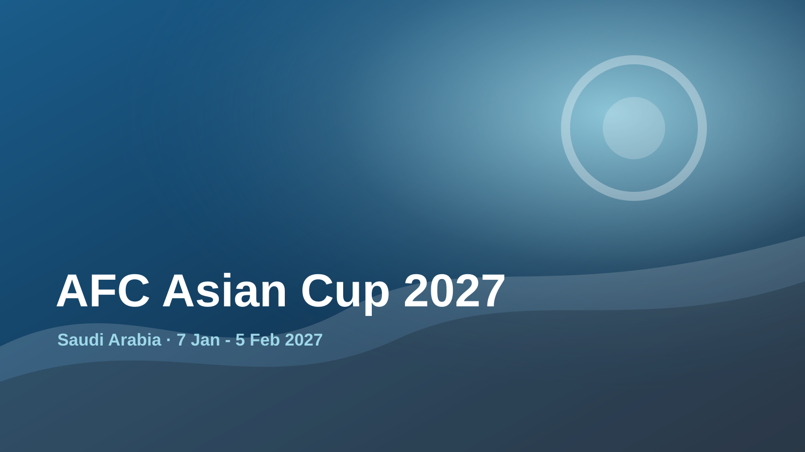
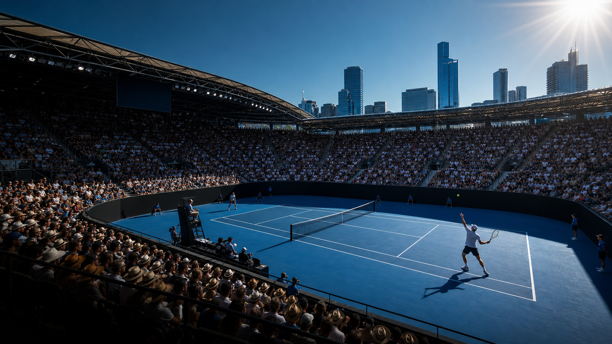

January
January 2027
Major events for the month.

Sport
AFC Asian Cup 2027
7 Jan - 5 Feb 2027 · Saudi Arabia

Sport
Australian Open 2027
18-31 Jan 2027 · Melbourne, Australia
Culture
CES 2027
5-8 Jan 2027 · Las Vegas, USA